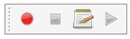

Макросы удобный способ создания сложных действий в FreeCAD. Вы просто записываете свои действия, в то время как вы их делаете, а затем сохраняете, это под названием, и воспроизводите их, когда вы хотите. Поскольку макросы в действительности список команд Python, вы можете также редактировать их, и создавать очень сложные сценарии.
Contents
Как это работает
Если включить вывод в консоль (меню Edit -> Preferences -> General -> Macros -> Show scripts commands in python console), вы увидите, что в FreeCAD, каждое действие что вы совершаете, например, при нажатии кнопки, выводится как Python команда. Эти команды могут быть записаны в макрос. Основным инструментом для создания макросов является панель инструментов макросы: . На это у вас есть 4 кнопки: запись(record), остановка записи(stop), редактирования и воспроизведения текущего макроса(edit and play the current macro).
{kind=link}
It is very simple to use: Press the record button, you will be asked to give a name to your macro, then perform some actions. When you are done, click the stop recording button, and your actions will be saved. You can now access the macro dialog with the edit button:

There you can manage your macros, delete, edit or create new ones from scratch. If you edit a macro, it will be opened in an editor window where you can make changes to its code.
Пример
Нажмите кнопку записи(record), дайте имя, скажем, "cylinder 10x10", а затем, в инструментарии деталей, создайте цилиндр с радиусом = 10 и высотой = 10. Затем нажмите "Остановить запись(stop)" кнопку. В диалоге редактирования макросов, вы можете увидеть Python код, который был записан, и, если вы хотите, произведите изменения в нем. Чтобы выполнить макрос, просто нажмите кнопку execute на панели инструментов, пока ваш макрос в редакторе. Ваш макрос всегда сохраняется на диске, поэтому любые изменения которые вы делаете, или каких-либо новые созданные макросы, всегда будут доступны при следующем запуске FreeCAD.
Настройка
Конечно, это не практично загружать макрос в редактор, затем чтобы использовать его. FreeCAD предоставляет гораздо лучшие способы использования макросов, такие как на них назначение клавиш, или добавлении записи в меню. Как только ваш макрос будет создан, все это можно сделать через Tools -> Customize menu:

Customize Toolbars This way you can make your macro become a real tool, just like any standard FreeCAD tool. This, added to the power of python scripting within FreeCAD, makes it possible to easily add your own tools to the interface. Read on to the Scripting page if you want to know more about python scripting...
Creating macros without recording
How to install macros You can also directly copy/paste python code into a macro, without recording GUI action. Simply create a new macro, edit it, and paste your code. You can then save your macro the same way as you save a FreeCAD document. Next time you start FreeCAD, the macro will appear under the "Installed Macros" item of the Macro menu.
Хранилище макросов
Посетите страницу Сборник макросов где вы можете выбрать некоторые полезные макросы, чтобы добавить их к своей системе, FreeCAD.